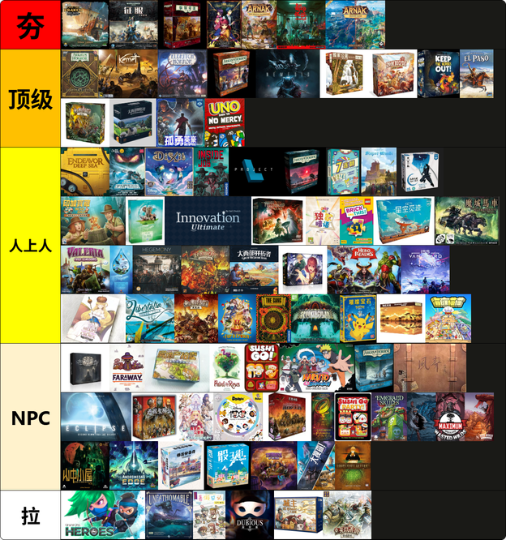

🙋About Me
I am a PhD student at Department of Computer Science and Technology, Tsinghua University, advised by Prof. Wenwu Zhu and Prof. Xin Wang.
My interests lie in Multimodal Intelligence, Embodied World Model, and Game Agent.
I received my B.Eng. from School of Materials Science and Engineering, Tsinghua University in 2022.
Feel free to call me Von or VonWei in any casual, non-ID-check situation — I'm perfectly fine with that. Just replacing "Feng" with the German word "Von", since they share the same Chinese character 冯.
🔥News
🎉🎉 My first-author paper "Modularized Dynamic-Granularity Video LLM for Multi-Event Long Video Understanding" received Best Student Paper Award at IEEE ICME 2026.
🎉🎉 My first-author paper "Reflective Cross-Granularity Grounding with Preference Optimization for Long Video Understanding" was selected as one of Best Paper Candidates at ACM ICMR 2026.
🎉🎉 My first-author paper "Multi-sentence Video Grounding for Long Video Generation" received Best Paper Runner-up Award at IEEE ICME 2025.
🎉🎉 My first-author paper "Multimedia Cognition and Evaluation in Open Environments" received Best Paper Award at ACM MM 2023 McGE Workshops.
📝Publications
Modularized Dynamic-Granularity Video LLM for Multi-Event Long Video Understanding
Wei Feng, Xin Wang, Yu-Wei Zhan, Yuwei Zhou, Wenwu Zhu
Reflective Cross-Granularity Grounding with Preference Optimization for Long Video Understanding
Wei Feng, Xin Wang, Hong Chen, Yu-Wei Zhan, Zihan Song, Bin Huang, Kecheng Zheng, Wenwu Zhu
Multi-sentence Video Grounding for Long Video Generation
Wei Feng, Xin Wang, Hong Chen, Zeyang Zhang, Wenwu Zhu
Localizing Step-by-Step: Multimodal Long Video Temporal Grounding with LLM
Houlun Chen, Xin Wang, Hong Chen, Wei Feng, Zihan Song, Jia Jia, Wenwu Zhu
VERIFIED: A Video Corpus Moment Retrieval Benchmark for Fine-Grained Video Understanding
Houlun Chen, Xin Wang, Hong Chen, Zeyang Zhang, Wei Feng, Bin Huang, Jia Jia, Wenwu Zhu
Multimedia Cognition and Evaluation in Open Environments
Wei Feng, Haoyang Li, Xin Wang, Xuguang Duan, Zi Qian, Wu Liu, Wenwu Zhu
H2V4Sports: Real-time Horizontal-to-Vertical Video Converter for Sports Lives
Yi Han, Kaidong Li, Zihan Song, Wei Feng, Xiang Cao, Shida Guo, Xin Wang, Xuguang Duan, Wenwu Zhu
📖Patent
⭐Other Academic Contributions
PhyVLLM: Physics-Guided Video Language Model with Motion-Appearance Disentanglement
Yu-Wei Zhan, Xin Wang, Hong Chen, Tongtong Feng, Wei Feng, Ren Wang, Guangyao Li, Qing Li, Wenwu Zhu
Video Grounding and Its Generalization: From I.D. and Task-specific Models to O.O.D. and Large Foundation Models
Non-authorship, writing contributions recognized in acknowledgements
Multi-Modal Generative AI: Multi-modal LLM, Diffusion and Beyond
Hong Chen, Xin Wang, Yuwei Zhou, Bin Huang, Yipeng Zhang, Wei Feng, Houlun Chen, Zeyang Zhang, Siao Tang, Wenwu Zhu
LLM4VG: Large Language Models Evaluation for Video Grounding
Wei Feng, Xin Wang, Hong Chen, Zeyang Zhang, Houlun Chen, Zihan Song, Yuwei Zhou, Yuekui Yang, Haiyang Wu, Wenwu Zhu
🎖Honors and Awards
🎓Educations
💻Internships
🎃Interests
⚽️ Football
🏸 Badminton
🎮 Game Agent, I am currently a participant of 3DGameAgentBench
🃏 I am a huge fan of boardgames, including RPG games (Arkham Horror), actuarial games (Lost Ruins of Arnak, Great Western Trail), and party games (UNO, Avalon, Love Letter). I have organized/participated in online or offline boardgames with friends from but not limited to the following countries: 🇨🇳🇺🇸🇫🇷🇦🇺🇮🇩🇩🇪🇧🇷🇮🇹🇭🇺🇧🇪🇨🇦🇦🇷🇫🇮🇵🇱🇵🇹. I am also designing my own boardgames Yin Yang Scam（阴阳骗局） and Werewolf Scam（狼人骗局）, and will share progress once they are ready — looking forward to connecting with fellow enthusiasts!
My boardgame preferences for games played in 2025
